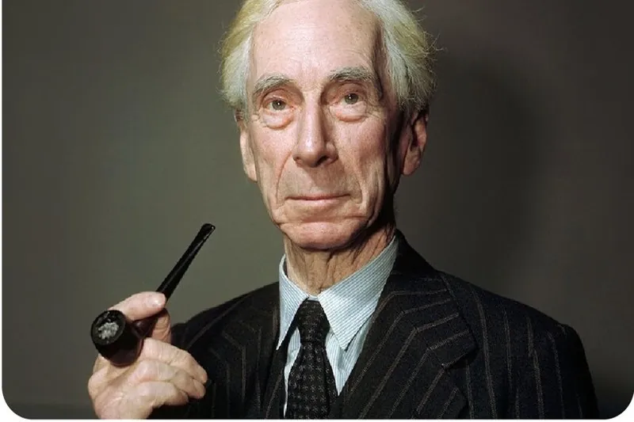

Why I Do Not Believe in God: A Rational Look at Atheism and the Absence of Evidence
Not believing in God does not require having an explanation for every mystery of the universe. It requires something simpler: not accepting as true that for which we find no sufficient reasons. Atheism, understood from this perspective, is an expression of intellectual freedom and critical thinking.

Bertrand Russell (1872–1970), British philosopher, mathematician, and writer. Nobel Prize in Literature in 1950.
Why do I not believe in God? This is not a question that must be answered with hostility toward religion or with the pretense of knowing all the secrets of the universe. My answer starts from a fairly simple criterion: I find no sufficient evidence to accept that there exists a supernatural being who created the world, intervenes in our lives, and determines how we should live.
This position is not the same as claiming that I can prove the nonexistence of every conceivable god. It means that I do not consider it justified to believe in something merely because we cannot prove otherwise. There is an important difference between acknowledging that we do not know an answer and taking for granted an explanation that has not been demonstrated either.
Atheism can be understood in different ways. For many people, it simply consists of not holding a belief in gods. It does not need to be a closed doctrine or a universal explanation of reality. It can be, above all, a response to a question: what reasons do we have to believe?
Bertrand Russell and the question that remains relevant
In 1927, the British philosopher and mathematician Bertrand Russell delivered a lecture entitled *Why I Am Not a Christian* before the National Secular Society in Battersea, London. The text was published that same year and became one of the best-known essays in the rational critique of religion.
Russell examined several of the traditional arguments used to prove the existence of God. Among them were the first cause argument, the argument from natural law, the argument from design, and the moral arguments. His analysis was not limited to expressing disbelief: he sought to determine whether those explanations actually proved what they claimed to prove.
One of his best-known challenges was directed at the first cause argument. According to this reasoning, everything that exists must have a cause, and therefore the universe must have been created by God. Russell asked why that same requirement would not apply to God. If everything needs a cause, what would be the cause of God's existence? And if it is admitted that God can exist without a cause, why not consider that possibility for the universe?
He also questioned the idea that the order of nature demonstrated the existence of a designer. Evolution offers an explanation of how organisms adapt to their environment without the need to suppose that they were previously designed for that purpose. Furthermore, the presence of suffering, disease, and imperfections in the world poses difficulties for the idea of an omnipotent and benevolent creator.
Russell's value does not lie in having definitively closed the debate. His arguments can be discussed and have received numerous philosophical responses. His contribution consists in showing that religious explanations must also be subjected to the examination of reason. A claim does not become true simply because it is ancient, popular, or considered sacred.
Who bears the burden of proving God exists?
A central issue in the debate is the burden of proof. If someone claims that a supernatural being exists, it is their responsibility to present reasons that support that claim. It is not reasonable to demand that the unconvinced prove the nonexistence of every deity humanity has ever imagined.
Consider any other claim about reality. If someone asserts that an invisible creature exists in a room, we have no reason to accept this simply because we cannot prove it is not there. We first need some evidence that allows us to take the possibility seriously.
Something similar happens with religious claims. The existence of a creator, divine intervention in everyday events, miracles, or life after death are claims that need justification. Faith may be important to the person who experiences it, but a personal conviction does not in itself constitute verifiable proof for others.
This also does not mean that we should dismiss everything we do not yet understand. It means we must distinguish between what we know, what we can investigate, and what we merely assume. Saying "I don't know" is an intellectually honest answer. It is neither a defeat nor an invitation to stop searching.
The mysteries of the universe are not proof of God
The origin of the universe, the emergence of life, and the nature of consciousness continue to raise profound questions. It is understandable that these issues inspire wonder and that some people find in them reasons to believe in a deity.
However, the fact that a question remains open does not demonstrate that a supernatural explanation is correct. The absence of a complete explanation is not equivalent to evidence of divine intervention.
The history of science offers numerous examples of phenomena that for centuries were attributed to supernatural forces and later found natural explanations. This does not mean that all questions will ultimately be resolved or that science alone can answer philosophical or ethical questions. Its strength lies elsewhere: it proposes explanations that can be tested, subjected to review, and corrected when the data require it.
Rational thinking does not consist of replacing religious certainty with absolute scientific certainty. It consists of adjusting our conclusions to the available evidence and acknowledging the limits of our knowledge.
Is it possible to be a moral person without believing in God?
One of the most frequent objections to atheism holds that, without God, there would be no foundation for morality. According to this argument, if there is no divine authority that establishes what is right and wrong, any behavior could be justified.
But human morality has roots that can be studied without resorting to supernatural explanations. Empathy, cooperation, and care for others are part of our evolutionary history and social life. Primatologist Frans de Waal, for example, documented behaviors of cooperation, consolation, and sensitivity to unfair treatment in other social primates. These findings help us understand that some components of our moral behavior have antecedents that predate organized religions.
This does not mean that evolution alone determines what we ought to do. To build an ethics, we also need reflection, deliberation, and criteria for evaluating the consequences of our actions. We can ask whether a decision causes unnecessary suffering, whether it respects others' freedom, or whether it contributes to a more just coexistence.
Morality does not need to depend on the surveillance of a supernatural being or the promise of a reward after death. We can act honestly because we value trust, respect others because we recognize their dignity, and reject violence because we understand the harm it causes.
Nor would it be correct to idealize atheists. The absence of religious beliefs does not guarantee ethical conduct, just as professing a religion does not automatically make someone a good person. Moral behavior must be evaluated by actions and their consequences, not by the religious or philosophical label of the person performing them.
Not believing in God does not mean living without meaning
Another widespread idea is that, without God or an afterlife, existence would lose its purpose. This conclusion assumes that the meaning of life must come from an external and transcendent source. But there is another possibility: that we can build it from our own experience.
Our relationships, projects, knowledge, and commitments have value for what they represent to us and to those around us. Caring for someone, raising a family, creating a work, learning something new, or contributing to a more just society are activities that do not need an eternal reward to have significance.
The philosopher Martin Hägglund develops this idea in *This Life: Secular Faith and Spiritual Freedom*. His reflection starts from an interesting observation: what we value is also what we know we can lose. The finitude of life gives importance to our bonds and commitments. If the time we share with other people were unlimited, our relationship with them would be different.
Accepting that life ends can be difficult, especially when we lose someone dear to us. However, we do not need to imagine an afterlife to recognize the value of a person. Their influence endures in those who knew them, in the experiences shared, and in the consequences of their actions.
A finite life is not an empty life. Its meaning can be built here and now.
The freedom to question also means being willing to change
Critical thinking does not consist of distrusting everything by default or of considering our own convictions to be unquestionable. It requires applying the same rigor to our own ideas that we use to examine those of others.
An atheist should be willing to revise their arguments if convincing evidence appears. If a claim is well supported, there is no reason to reject it simply because it contradicts our expectations. The willingness to change one's mind is not a weakness: it is a prerequisite for learning.
It is also possible to question religious beliefs without disdaining those who hold them. People arrive at religion for diverse reasons: family upbringing, culture, community, personal experiences, or the search for answers in difficult situations. Understanding those reasons does not oblige us to share their conclusions.
Defending freedom of thought means protecting both the right to believe and the right not to believe, to change one's convictions, and to express criticism of religions and their institutions. No idea should be exempt from public debate simply because it is considered sacred.
I do not need all the answers to not believe
I do not believe in God because I find no sufficient evidence to justify that belief. I do not consider that this stance resolves all the mysteries of the universe, nor that those who think differently lack intelligence or values. I simply prefer not to affirm that something is true when I do not have sufficient reasons to accept it.
This attitude is part of a broader tradition of humanist thought. Humanists International, in its Amsterdam Declaration, upholds reason, free inquiry, and the continuous revision of knowledge. It also maintains that people can build an ethical and meaningful life through reason, compassion, and shared responsibility.
Atheism, by itself, does not constitute a complete moral philosophy or guarantee a particular way of living. But it can be the starting point of a worldview that does not depend on supernatural authorities and that keeps questions open.
We do not need all the answers to live with responsibility, curiosity, and meaning. We can acknowledge what we do not know, seek better-founded explanations, and build our decisions based on what we know and the values we choose to defend.
Perhaps that is one of the most important expressions of intellectual freedom: having the courage to ask, the honesty to acknowledge that we do not know, and the willingness to change our minds when the evidence warrants it.
The debate continues in Lima
Those who wish to meet humanists, atheists, and freethinkers from different countries, exchange ideas, and participate in conversations about reason, ethics, and human rights can attend the World Humanist Congress 2027, which will be held in Lima, Peru, from August 20 to 22, 2027, organized by Humanists International.
It will be an opportunity to connect with people who, from diverse cultures and experiences, share an interest in thinking freely and building a more open and humane society.